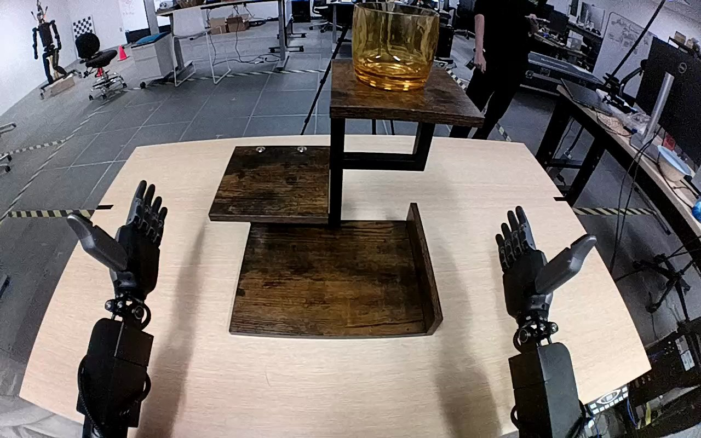

NVIDIA GR1 · 15
Video 15

Visual review action_review.json
{
"prompt_protocol": "humanoid_action_v1",
"prompt_provenance": "visually_authored_from_video_and_initial_frame",
"reviewed_contact_sheets": [
"sheet_001.jpg"
],
"inspected_frame_stride": 2,
"inspected_sampled_frame_count": 60,
"initial_scene": "Robot-mounted forward view of both forearms and open dexterous hands facing a three-level wooden shelf. One translucent amber-orange cup stands upright on the highest shelf; lower shelves are empty.",
"observed_sequence": [
{
"source_frame_interval": [
0,
26
],
"action": "Both hands remain open near the lower corners; the orange cup is upright on the highest shelf.",
"confidence": "high"
},
{
"source_frame_interval": [
27,
56
],
"action": "The right arm rises toward the cup from the robot right while the left hand stays open and stationary.",
"confidence": "high"
},
{
"source_frame_interval": [
57,
70
],
"action": "The right hand closes around the cup sides, with the thumb on the near side and the fingers around the far side. The cup initially remains on the top shelf.",
"confidence": "high"
},
{
"source_frame_interval": [
71,
80
],
"action": "The right hand lifts the cup off the highest shelf and moves it rightward clear of the shelf edge.",
"confidence": "high"
},
{
"source_frame_interval": [
81,
100
],
"action": "The grasped upright cup is carried downward and inward toward the lowest wooden shelf.",
"confidence": "high"
},
{
"source_frame_interval": [
101,
111
],
"action": "The right hand positions the upright cup on the lowest shelf and shifts it toward the left side of that shelf while retaining contact.",
"confidence": "high"
},
{
"source_frame_interval": [
112,
119
],
"action": "The right fingers open beside the upright cup on the bottom shelf. The hand remains immediately beside the cup; no clear withdrawal occurs before the ending.",
"confidence": "high"
}
],
"arm_hand_roles": {
"right": "Sole manipulating hand: reaches, grasps the cup sides, lifts and transports it to the bottom shelf, then opens fingers beside it.",
"left": "Remains open beside the shelf without touching the cup or supporting the shelf.",
"coordination": "Single-hand manipulation; no hand-to-hand transfer or bilateral support."
},
"anatomical_side_evidence": {
"convention": "Egocentric robot-mounted view, with each forearm extending forward from its corresponding lower side of the view. Initial palms face back toward the camera: the image-right hand has its thumb on its outer image-right edge and the image-left hand has its thumb on its outer image-left edge. This handedness plus the ipsilateral forearm paths identifies the active hand as the robot right.",
"confidence": "high",
"uncertainty": "The torso and shoulders are outside the camera view; identity is established from egocentric arm paths and hand anatomy rather than visible shoulders."
},
"terminal_state": "The orange cup stands upright on the left portion of the lowest shelf. The right hand is open immediately beside it, with the thumb still near the cup; the left hand remains idle and open. The highest shelf is empty.",
"uncertainties": [
"The final thumb-to-cup contact is partly obscured; complete separation of every digit and a subsequent hand withdrawal are not visible. The prompt describes opening beside the cup rather than inferring a clean withdrawn release."
],
"annotation_discrepancies": [],
"evidence_frame_indices": [
0,
64,
76,
98,
100,
110,
115,
117,
119
],
"selected_execution_status": "success",
"outcome_basis": "The cup visibly reaches the bottom shelf upright and the fingers open there; success describes relocation, without asserting full hand withdrawal.",
"video_id": "15",
"dataset": "NVIDIA_GR1_100",
"dedicated_review_agent": "review_gr1_15",
"review_source_video": "NVIDIA_GR1_100/15/original/original.mp4",
"source_frame_count": 120,
"source_fps": 20.0,
"native_detail_frames": [
64,
76,
98,
100,
110,
115,
117,
119
],
"world_model_prompt": "The robot uses its right hand to grasp the translucent orange cup around its sides and lift it clear of the top shelf. It carries the cup downward to the bottom shelf, sets it upright, and opens its fingers beside the cup. Keep the camera fixed; preserve robot geometry, physically valid joint motion, and normal gripper opening and closing.",
"original_task_instruction": "Use the right hand to pick up clear orange cup from top level of the shelf to bottom level of the shelf.",
"selected_segment": {
"start_frame": 0,
"end_frame_exclusive": 120,
"reason": "Complete original single-task reference; no cropping or trimming requested."
},
"source_video_sha256": "51f9a8cbea35b81cf60bbf062f6996331f40e782cbaabe7ae68f2fdc52cb2b73",
"review_completed_at": "2026-10-13T17:45:38.665404+00:00"
}